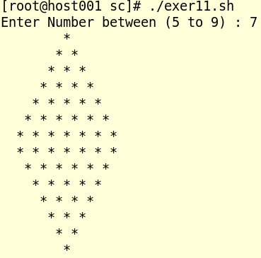
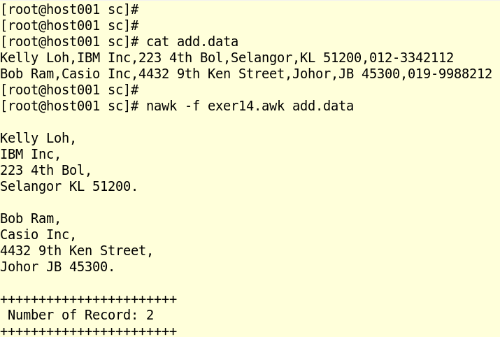
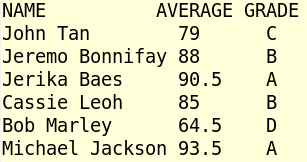

Shell Script (Exercise)
INSTRUCTION
| Q.1. Write a shell script that will add two numbers, which are supplied as command line argument, and if this two numbers are not given or given with any other input beside two numbers, show error and its usage and exit the script. Script name : exer1.sh Answer: See Q1 shell Script. |
| Q.2. Write Script to find out biggest number from given three numbers. Numbers are supplies as command line argument. Print error if sufficient arguments are not supplied or any other argument supplied besides 3 numbers. Script name: exer2.sh Answer: See Q2 shell Script. |
| Q.3. Write script to print Number 1 to 5 in reverse order using while loop. Script name: exer3.sh Answer: See Q3 shell Script. |
| Q.4. Write Script, using case statement to perform basic math operation as follows + addition - subtraction X|x multiplication ( using the letter 'x' ) / division The name of script must be 'exer4.sh' which works as follows, $> ./exer4.sh 20 x 2 $> 40 Also check for sufficient command line arguments and print error and usage if no proper argument passed. Answer: See Q4 shell Script. |
| Q.5. Write Script to see current date, time, username, and current directory Script name: exer5.sh Answer: See Q5 shell Script. |
| Q.6. Write script to print given number in reverse order, for eg. If number is 456 it must print as 654. Check for sufficient command line arguments and print error and usage if no proper argument passed Script name: exer6.sh Answer: See Q6 shell Script. |
| Q.7. Write script to print given numbers sum of all digit, For eg. If number is 456, the sum of all digit will be 4+5+6 = 15. Check for sufficient command line arguments and print error and usage if no proper argument passed Script name: exer7.sh Answer: See Q7 shell Script. |
| Q.8. Write script to determine whether given file exist or not, file name is supplied as command line argument, also check for sufficient number of command line argument and print usage if no proper argument passed Script name: exer8.sh Answer: See Q8 shell Script. |
|
Q.9. If the sysmbol # is not there, then script should print [ Required /etc/# ] , and if symbol present then |
|
Q.10. Name this script as exer10.sh. Example Exeuction: |
| Q.11. Write shell script using loop to print the following patterns on screen with accepted range within 5 to 9:  Script Name: exer11.sh Answer: See Q11 shell script |
| Q12. Write a script to prompt for firstname and last name and create a user in the system using 3 char from firstname and 2 char from lastname. The script should transform all upper case input to lower case. The script must validate Firstname and Lastname input and exit if not passed. The script should confirm with the executor with the username, if not, the script should exit The script should check for user name in the system before creation. The script should NOT be terminated by kill signals ( interrupt and quit ) e.g: $> ./exer12.sh Enter FirstName & LastName: Jerika Barungas Your user name in the system will be : jerba ( okay? y/n )[n] ^^if the answer is y, script should create the user and exit ^^if the answer is n, the script should exit. Script name : exer12.sh Answer: See Q12 shell script |
| Q13. Write a script that performs a backup of /etc into /backup/ directory. The script should auto create /backup/ directory if it does not exist. The script should run in silence mode. The script should use tools that minimize the size impact of the backup file. The script should check for same day backup file to avoid recreation of backup on the same day. The script should log into /backup/bc.log as per line statement for both success and failure with the run time and date and executor username e.g : $> ./exer13.sh $> ./exer13.sh $> cat /backup/bc.log $>USER: root TIME: 17:00 DATE: 13-09-2014 : STATUS : Success $>USER: root TIME: 17:02 DATE: 13-09-2014 : STATUS : Failed Script Name: exer13.sh Answer: See Q13 shell script |
| Q14. Write a script to generate output as shown below using awk script:  The sample data can be downloaded from this link Script Name: exer14.awk Answer: See Q14 shell script |
| Q15. Write a script that performs a grading marking based on a data file. The Marking scheme as follows: There are 6 subjects taken by the students: BM : Bahasa Malaysia BI : English SC : Science MT : Mathematics KI : Chemistry HI : History Average all the marks from all the subject and grade according to the following: >= 90 grade = A >= 80 grade = B >= 70 grade = C >= 60 grade = D Below 59 grade = F The sample data can be downloaded from this link The script can use any method [ awk, sed , array ] The output of script should look exactly like this:  Script name : exer15 Answer: See Q15 shell script |